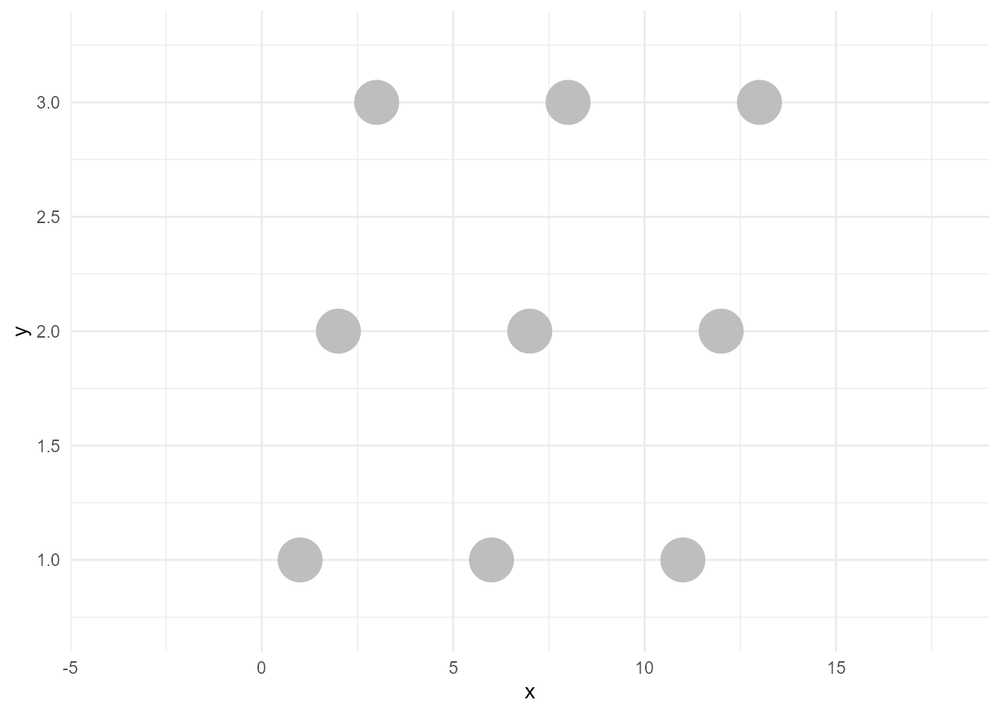
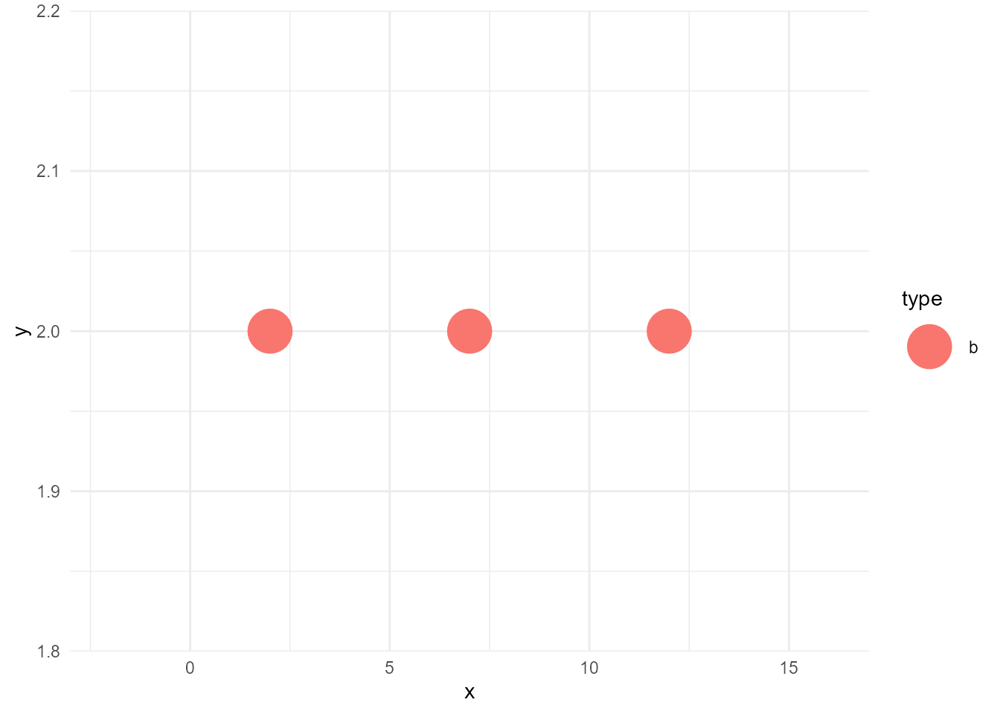
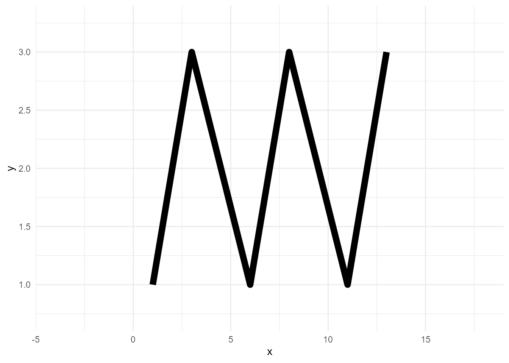
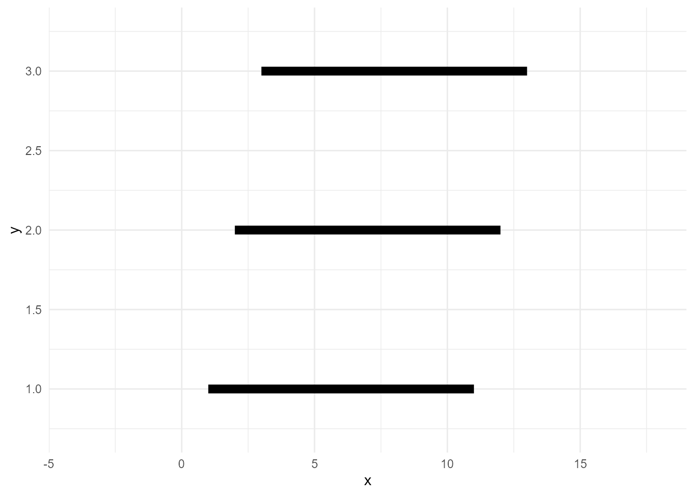
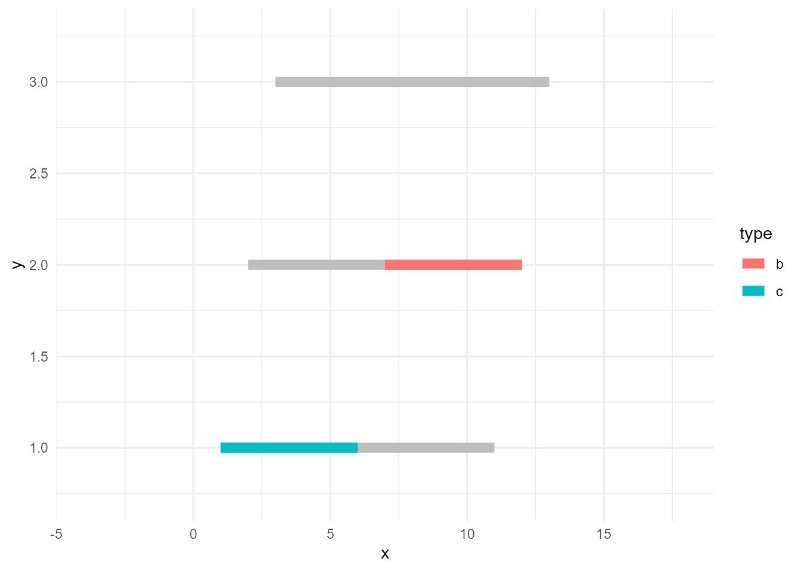
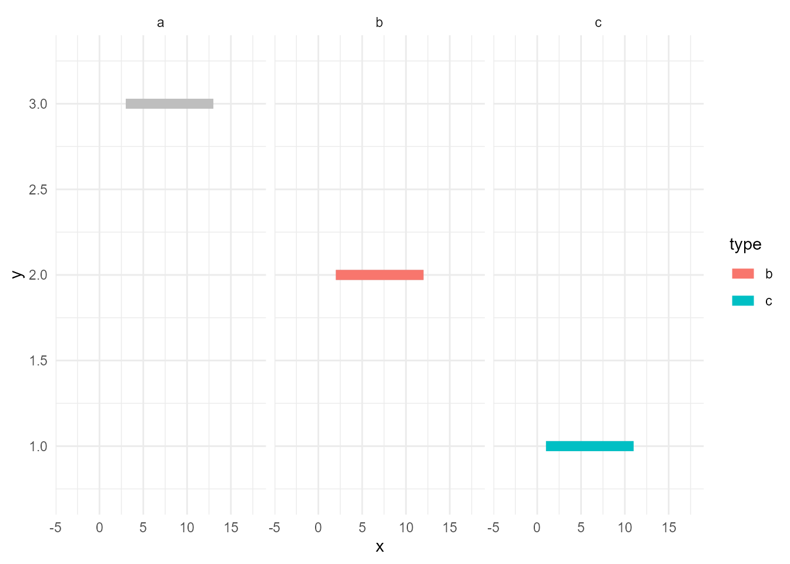
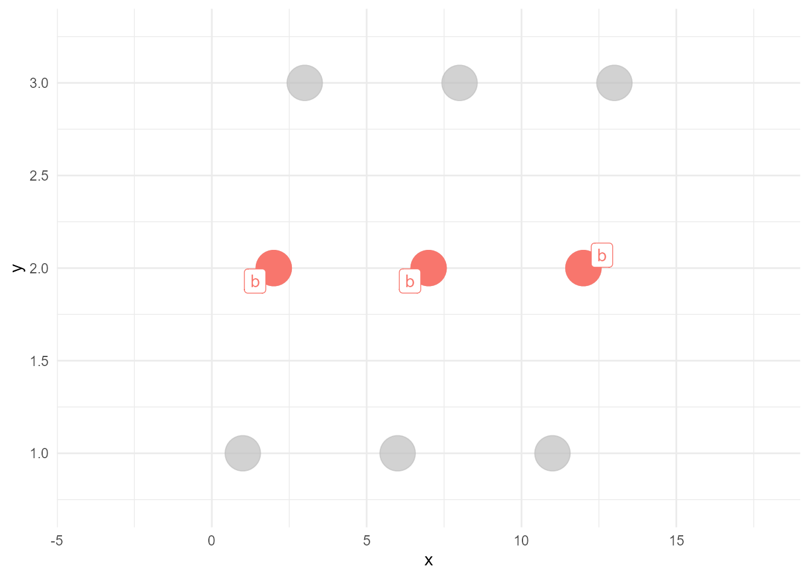
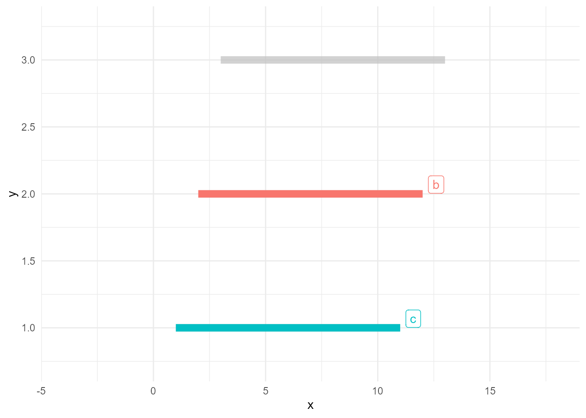

# tweak for plotting
knit_print.ggplot <- function(x, ...) {
x <- x +
theme_minimal() +
scale_x_continuous(expand = expand_scale(mult = 0.5)) +
scale_y_continuous(expand = expand_scale(mult = 0.2))
ggplot2:::print.ggplot(x, ...)
}I’m overhauling my gghighlight package toward the upcoming release of ggplot2 2.3.0. I think I will introduce about the new gghighlight() soon, but before that, I want to write out the ideas behind gghighlight.
Note that what I’ll write here contains few new things, as the basic idea is already covered by this great post:
My post is mainly for organizing my thought, yet I hope someone find this useful :)
Data
Suppose we have this data:
| x | y | type | value |
|---|---|---|---|
| 3 | 3 | a | 0 |
| 8 | 3 | a | 1 |
| 13 | 3 | a | 0 |
| 2 | 2 | b | 0 |
| 7 | 2 | b | 10 |
| 12 | 2 | b | 10 |
| 1 | 1 | c | 10 |
| 6 | 1 | c | 20 |
| 11 | 1 | c | 0 |
Simple plot
If we plot the data very simply, the code would be like this:
library(tidyverse)
ggplot(d, aes(x, y, colour = type)) +
geom_point(size = 10)Warning: `expand_scale()` was deprecated in ggplot2 3.3.0.
Please use `expansion()` instead.
This warning is displayed once every 8 hours.
Call `lifecycle::last_lifecycle_warnings()` to see where this warning was generated.
Highlighted plot
Now, what if we want to highlight only the points of records whose type are "b"?
We need two layers:
- unhighlighted layer
- highlighted layer
Create an unhighlighted layer
An unhighlighted layer is the colorless version of the above points with the same data. To create this, we can simply remove colour from aes() and specify a static colour "grey". I call this operation as bleach.
bleached_layer <- geom_point(data = d, aes(x, y),
size = 10, colour = "grey")If we plot this, the result would be below:
ggplot() +
bleached_layer
Create a highlighted layer
A highlighted layer is the fewer-data version of the above points with (not necessarily the same) colors. To create this, we need some data manipulation. Let’s filter the data.
d_sieved <- filter(d, type == "b")Then the layer we want can be created like below. I call this operation as sieve (filter might be a better word, but I wanted to choose another word than dplyr’s verbs to avoid confusion).
sieved_layer <- geom_point(data = d_sieved, aes(x, y, colour = type),
size = 10)If we plot this, the result would be below:
ggplot() +
sieved_layer
Join the two layers
Now we can draw the highlighted version of the plot as below:
ggplot() +
bleached_layer +
sieved_layer
“by point” vs “by group”
So far, so good. Then, let’s consider a bit about the case when the geom is not point, but line.
While points can be plotted one by one, lines cannot be drawn without the relationship between points. For example, haven’t you experienced an unexpected zigzag line?
ggplot(d, aes(x, y)) +
geom_line(size = 3)size aesthetic has been deprecated for use with lines as of ggplot2 3.4.0
ℹ Please use linewidth aesthetic instead
This message is displayed once every 8 hours.
Lines need group variable, which indicates the series of data points.
ggplot(d, aes(x, y, group = type)) +
geom_line(size = 3)
Note that group doesn’t need to be declared explicitly, as ggplot2 infers the groups from the specified variables. More precisely, it calculates group IDs based on the combination of discrete variables here. So, usually, specifying a discrete variable on colour or fill is enough.
ggplot(d, aes(x, y, colour = type)) +
geom_line(size = 3)
Anyway, lines need groups. Accordingly, we need to consider the group when we sieve the data. Otherwise, the lines will be incomplete as this example:
# data whose values are >=10
d_sieved2 <- filter(d, value >= 10)
ggplot() +
geom_line(data = d, aes(x, y, group = type), size = 3, colour = "grey") +
geom_line(data = d_sieved2, aes(x, y, colour = type), size = 3)
So, the correct way of doing this is to use group_by() and some aggregate functions like max() so that the calculations are done by group.
# data series whose max values are >=10
d_sieved3 <- d %>%
group_by(type) %>%
filter(max(value) >= 10)
ggplot() +
geom_line(data = d, aes(x, y, group = type), size = 3, colour = "grey") +
geom_line(data = d_sieved3, aes(x, y, colour = type), size = 3)
Prevent unhighlighted layer from facetted
Next topic is facetting. Let’s naively facet the plot above.
ggplot() +
geom_line(data = d, aes(x, y, group = type), size = 3, colour = "grey") +
geom_line(data = d_sieved3, aes(x, y, colour = type), size = 3) +
facet_wrap(~ type)
Hmm…, unhighlighted lines are facetted. But, maybe we want the grey ones exists in all of the panels.
facet_*() facets all layers if the data contains the specified variable, in this case type. In other words, if the layer’s data doesn’t have the variable, it won’t get facetted. Let’s rename it.
d_bleached <- d
names(d_bleached)[3] <- "GROUP"
ggplot() +
geom_line(data = d_bleached, aes(x, y, group = GROUP), size = 3, colour = "grey") +
geom_line(data = d_sieved3, aes(x, y, colour = type), size = 3) +
facet_wrap(~ type)
You may notice about one more good thing; the panel for "a" disappeared. This is because now d_sieved3 is the only data that contains type and it has only records of "b" and "c".
Some spoilers
The next version of gghighlight will do the above things almost automatically. All you have to do is just adding gghighlight().
library(gghighlight)
ggplot(d, aes(x, y, colour = type)) +
geom_point(size = 10) +
gghighlight(type == "b")Warning: Tried to calculate with group_by(), but the calculation failed.
Falling back to ungrouped filter operation...label_key: type
ggplot(d, aes(x, y, colour = type)) +
geom_line(size = 3) +
gghighlight(max(value) >= 10)label_key: type
Stay tuned!